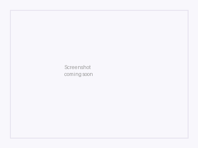

ClickUp Time Tracker
Create tasks, track time, and sync ClickUp — directly from Zendesk.
Create tasks, track time, and sync ClickUp — directly from Zendesk.
Start and stop a timer on any ClickUp task directly from the Zendesk sidebar. Entries are logged to ClickUp with optional descriptions.
Create new ClickUp tasks or link existing ones to Zendesk tickets. Searchable task picker with subtask support.
Automatically close ClickUp tasks when Zendesk tickets are solved. Change task status directly from the sidebar.
Each agent connects their own ClickUp account. Time entries are attributed to the right person.
Map Zendesk organizations to ClickUp lists. Tasks are automatically scoped to the right project.
See when a timer is running on a different task. Stop or switch with one click — no lost time entries.
See ClickUp Time Tracker in action inside the Zendesk sidebar.

Install from the Zendesk Marketplace. The app appears in the ticket sidebar.
Each agent clicks "Connect ClickUp" and authorizes via OAuth. No API tokens needed.
Link Zendesk organizations to ClickUp lists. This only needs to be done once per organization.
Create tasks, track time, and sync statuses — all from the ticket sidebar.